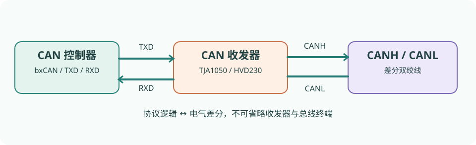
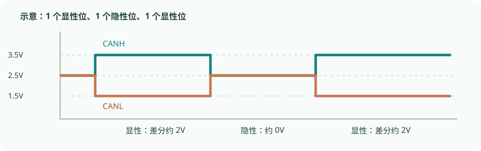

CAN 收发器：0 和 1 如何变成 CANH 与 CANL？
从 TXD/RXD 到差分电压、共模扰动与器件选型，把物理层的信号路径真正讲清楚。
为什么 MCU 的一个 0，能在双绞线上变成两路电压？
控制器知道帧、仲裁、CRC，却不能直接把普通 GPIO 当作长线总线驱动。CAN 收发器是逻辑域与差分物理层之间的边界：TXD 告诉它想发显性还是隐性，RXD 把线上实际判到的状态送回控制器。

典型高电平为隐性（1），低电平请求显性（0）。收发器必须和控制器的 I/O 电平兼容；5V 供电不自动等于 TXD/RXD 可直接连接所有 3.3V MCU，要查具体型号的 VIH、VOH 与绝对最大额定值。
同一时刻，差分电压和共模电压各讲什么？
信号的判决量主要是 CANH − CANL。以典型 5V 高速收发器的教学波形为例：显性时 CANH 约 3.5V、CANL 约 1.5V；隐性时两线接近 2.5V。实际电压受收发器、负载、供电与共模环境影响，不能把这些数当作所有器件的规格上下限。

试验：同时给两根线叠加电压，会发生什么？
CANH 3.5 V · CANL 1.5 V · 差分 2.0 V · 共模 2.5 V
理想等幅干扰模型，不是收发器极限电压或抗扰度实测。
不要混淆三个概念：总线的共模工作范围、绝对最大总线引脚电压、差分判决阈值来自不同的器件规格条目；设计必须分别核对，不能用一个“−2V 到 +7V”的数字覆盖所有条件。
TJA1050 与 SN65HVD230：差别不只是供电
| 项目 | NXP TJA1050 | TI SN65HVD230 |
|---|---|---|
| 供电 | 标称 5V | 标称 3.3V |
| 控制引脚 | S：高速 / 静默 | RS：高速 / 斜率控制 / 低电流待机 |
| 静默与待机 | 静默不等于低功耗待机，发送器关闭、接收仍工作 | RS 置高进入低电流监听待机，发送器关闭 |
| 显性差分量 | 随总线负载变化，常用约 2V 示意 | 规格典型约 2V（须按测试条件查询） |
| 方案限制 | 旧型号，须检查供货状态与替代料 | 斜率减缓会增加传播延迟，需重新校核位时序 |
SN65HVD230 的 RS 引脚不是任意加大电阻就一定提高可靠性。慢边沿可以减轻某些 EMI，但也缩短有效采样裕量。TJA1050 的 S 脚只提供高速与静默选择，不能把它当成有微安待机功能的芯片。
对于新设计，还应一并查看 I/O 兼容性、显性超时保护、总线故障耐压、ESD、EMC、工作温度与是否需要隔离。不能仅凭两款老型号的“更好”作绝对排名。
如何从一张波形判定故障所在？
- 先看控制器侧 TXD：发送期间是否出现显性脉冲？没有则先核时钟、初始化、发送邮箱及引脚复用。
- 再看 CANH/CANL 差分：有 TXD、无正常差分，排查收发器供电、模式脚、终端、线束短断路及共模范围。
- 最后看 RXD 与总线 ACK：RXD 应反映总线所见，单节点正常模式可能因缺少其他节点 ACK 而自动重传。
标准高速 CAN 线性总线通常在两端各有 120Ω 终端，断电后总线两线间常测到约 60Ω；实测会受到并联器件和电路影响，不能仅靠电阻值断言网络完全正常。
进一步查证
器件级数值以订货型号和数据手册版次为准：NXP TJA1050 数据手册、TI SN65HVD23x 数据手册。本章图中的电压值用于建立差分直觉，不是合格判据。